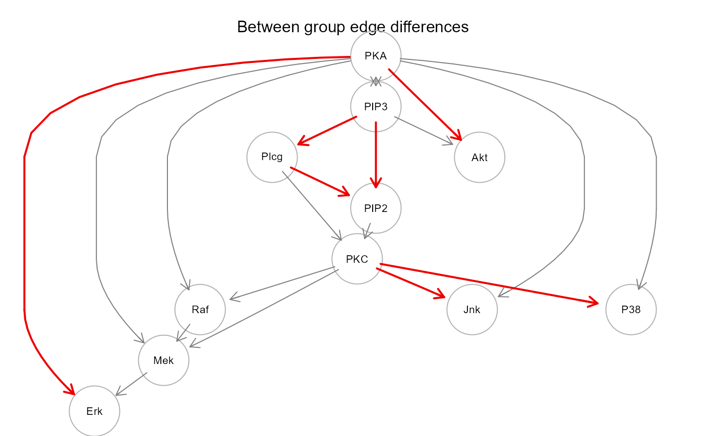

SEMrun() converts a (directed, undirected, or mixed)
graph to a SEM and fits it. If a binary group variable (i.e., case/control)
is present, node-level or edge-level perturbation is evaluated.
This function can handle loop-containing models, although multiple
links between the same two nodes (including self-loops and mutual
interactions) and bows (i.e., a directed and a bidirected link between
two nodes) are not allowed.
SEMrun( graph, data, group = NULL, fit = 0, algo = "lavaan", start = NULL, limit = 100, ... )
Arguments
| graph | An igraph object. |
|---|---|
| data | A matrix whith rows corresponding to subjects, and columns to graph nodes (variables). |
| group | A binary vector. This vector must be as long as the
number of subjects. Each vector element must be 1 for cases and 0
for control subjects. If |
| fit | A numeric value indicating the SEM fitting mode.
If |
| algo | MLE method used for SEM fitting. If |
| start | Starting value of SEM parameters for |
| limit | An integer value corresponding to the network size
(i.e., number of nodes). Beyond this limit, the execution under
|
| ... | Currently ignored. |
Value
A list of 5 objects:
"fit", SEM fitted lavaan, ricf, or ggmncv object, depending on the MLE method specified by the
algoargument;"gest" or "dest", a data.frame of node-specific ("gest") or edge-specific ("dest") group effect estimates and P-values;
"model", SEM model as a string if
algo = "lavaan", andNULLotherwise;"graph", the induced subgraph of the input network mapped on data variables. Graph edges (i.e., direct effects) with P-value < 0.05 will be highlighted in red (beta > 0) or blue (beta < 0). If a group vector is given, nodes with significant group effect (P-value < 0.05) will be red-shaded (beta > 0) or lightblue-shaded (beta < 0);
"dataXY", input data subset mapping graph nodes, plus group at the first column (if no group is specified, this column will take NA values).
Details
SEMrun maps data onto the input graph and converts it into a
SEM. Directed connections (X -> Y) are interpreted as direct causal
effects, while undirected, mutual, and bidirected connections are
converted into model covariances. SEMrun output contains different sets
of parameter estimates. Beta coefficients (i.e., direct effects) are
estimated from directed interactions and residual covariances (psi
coefficients) from bidirected, undirected, or mutual interactions.
If a group variable is given, exogenous group effects on nodes (gamma
coefficients) will be estimated. This will also lead to the estimation
of a set of aggregated group effects, if algo = "ricf" (see
SEMgsa).
By default, maximum likelihood parameter estimates and P-values for
parameter sets are computed by conventional z-test (= estimate/SE),
and fits it through the lavaan function, via
Maximum Likelihood Estimation (estimator = "ML", default estimator in
lavOptions).
In case of high dimensionality (n.variables >> n.subjects), the covariance
matrix could not be semi-definite positive and thus parameter estimates
could not be done. If this happens, covariance matrix regularization
is enabled using the James-Stein-type shrinkage estimator implemented
in the function pcor.shrink of corpcor R package.
Argument fit determines how group influence is evaluated in the
model, as absent (fit = 0), node perturbation (fit = 1),
or edge perturbation (fit = 2). When fit = 1, the group
is modeled as an exogenous variable, influencing all the other graph
nodes. When fit = 2, SEMrun estimates the differences
of the beta and/or psi coefficients (network edges) between groups.
This is equivalent to fit a separate model for cases and controls,
as opposed to one common model perturbed by the exogenous group effect.
Once fitted, the two models are then compared to assess significant
edge (i.e., direct effect) differences (d = beta1 - beta0).
P-values for parameter sets are computed by z-test (= d/SE), through
lavaan. As an alternative to standard P-value
calculation, SEMrun may use either RICF (randomization P-values) or
GGM (de-sparsified P-values) methods. These algorithms are much faster
than lavaan in case of large input graphs.
References
Pearl J (1998). Graphs, Causality, and Structural Equation Models. Sociological Methods & Research., 27(2):226-284. <https://doi.org/10.1177/0049124198027002004>
Yves Rosseel (2012). lavaan: An R Package for Structural Equation Modeling. Journal of Statistical Software, 48(2): 1-36. <https://www.jstatsoft.org/v48/i02/>
Pepe D, Grassi M (2014). Investigating perturbed pathway modules from gene expression data via Structural Equation Models. BMC Bioinformatics, 15: 132. <https://doi.org/10.1186/1471-2105-15-132>
Drton M, Eichler M, Richardson TS (2009). Computing Maximum Likelihood Estimated in Recursive Linear Models with Correlated Errors. Journal of Machine Learning Research, 10(Oct): 2329-2348. <https://www.jmlr.org/papers/volume10/drton09a/drton09a.pdf>
Larson JL and Owen AB (2015). Moment based gene set tests. BMC Bioinformatics, 16: 132. <https://doi.org/10.1186/s12859-015-0571-7>
Palluzzi F, Grassi M (2021). SEMgraph: An R Package for Causal Network Analysis of High-Throughput Data with Structural Equation Models. <arXiv:2103.08332>
Williams D (2020). GGMncv: Gaussian Graphical Models with Non-Convex Penalties. R package version 1.1.0. <https://CRAN.R-project.org/package=GGMncv>
See also
See fitAncestralGraph for RICF algorithm
details, flip for randomization P-values, and
constrained for constrained GGM, and
inference for de-sparsified P-values.
Author
Mario Grassi mario.grassi@unipv.it
Examples
#### Model fitting (no group effect) sem0 <- SEMrun(graph = sachs$graph, data = log(sachs$pkc), algo = "lavaan")#> Warning: lavaan WARNING: #> model syntax contains variance/covariance/intercept formulas #> involving (an) exogenous variable(s): [zPIP3 zPKA]; These #> variables will now be treated as random introducing additional #> free parameters. If you wish to treat those variables as fixed, #> remove these formulas from the model syntax. Otherwise, consider #> adding the fixed.x = FALSE option.#> NLMINB solver ended normally after 14 iterations #> #> deviance/df: 66.93929 srmr: 0.0894731 #>#> lavaan 0.6-8 ended normally after 14 iterations #> #> Estimator ML #> Optimization method NLMINB #> Number of model parameters 30 #> #> Number of observations 1766 #> #> Model Test User Model: #> #> Test statistic 2409.815 #> Degrees of freedom 36 #> P-value (Chi-square) 0.000 #> #> Parameter Estimates: #> #> Standard errors Standard #> Information Observed #> Observed information based on Hessian #> #> Regressions: #> Estimate Std.Err z-value P(>|z|) #> zAkt ~ #> zPIP3 -0.065 0.020 -3.251 0.001 #> zPKA 0.546 0.020 27.454 0.000 #> zErk ~ #> zMek -0.021 0.021 -0.974 0.330 #> zPKA 0.456 0.021 21.506 0.000 #> zJnk ~ #> zPKA 0.093 0.024 3.940 0.000 #> zPKC 0.128 0.024 5.439 0.000 #> zMek ~ #> zPKA 0.011 0.018 0.615 0.539 #> zPKC -0.006 0.017 -0.321 0.748 #> zRaf 0.683 0.018 38.931 0.000 #> zP38 ~ #> zPKA -0.018 0.018 -0.988 0.323 #> zPKC 0.646 0.018 35.504 0.000 #> zPIP2 ~ #> zPIP3 0.489 0.020 24.698 0.000 #> zPlcg 0.227 0.020 11.441 0.000 #> zPKC ~ #> zPIP2 0.020 0.025 0.782 0.434 #> zPlcg 0.014 0.025 0.570 0.568 #> zPlcg ~ #> zPIP3 0.207 0.023 8.895 0.000 #> zRaf ~ #> zPKA -0.124 0.024 -5.261 0.000 #> zPKC -0.037 0.024 -1.587 0.113 #> #> Covariances: #> Estimate Std.Err z-value P(>|z|) #> zPIP3 ~~ #> zPKA -0.103 0.024 -4.306 0.000 #> #> Variances: #> Estimate Std.Err z-value P(>|z|) #> .zAkt 0.690 0.023 29.715 0.000 #> .zErk 0.790 0.027 29.715 0.000 #> .zJnk 0.973 0.033 29.715 0.000 #> .zMek 0.534 0.018 29.715 0.000 #> .zP38 0.583 0.020 29.715 0.000 #> .zPIP2 0.663 0.022 29.715 0.000 #> .zPKC 0.999 0.034 29.715 0.000 #> .zPlcg 0.957 0.032 29.715 0.000 #> .zRaf 0.982 0.033 29.715 0.000 #> zPIP3 0.999 0.034 29.715 0.000 #> zPKA 0.999 0.034 29.715 0.000 #>#> lhs op rhs est se z pvalue ci.lower ci.upper #> 1 zAkt ~ zPIP3 -0.065 0.020 -3.251 0.001 -0.104 -0.026 #> 2 zAkt ~ zPKA 0.546 0.020 27.454 0.000 0.507 0.585 #> 3 zErk ~ zMek -0.021 0.021 -0.974 0.330 -0.062 0.021 #> 4 zErk ~ zPKA 0.456 0.021 21.506 0.000 0.415 0.498 #> 5 zJnk ~ zPKA 0.093 0.024 3.940 0.000 0.047 0.139 #> 6 zJnk ~ zPKC 0.128 0.024 5.439 0.000 0.082 0.174#> RICF solver ended normally after 2 iterations #> #> deviance/df: 66.93929 srmr: 0.0894731 #>#> RICF solver ended normally after 2 iterations #> #> Estimator ML #> Optimization method RICF #> #> Number of free parameters 30 #> #> Number of observations 1766 #> #> Model Test User Model #> #> Test statistic (Deviance) 2409.815 #> Degrees of freedom (df) 36 #> Deviance/df 66.939 #> Standardized Root Mean Square Residual (srmr) 0.089 #> #> Parameter Estimates: #> #> Regressions: #> #> lhs op rhs est #> 1 Akt ~ PIP3 -0.065 #> 2 Akt ~ PKA 0.546 #> 3 Erk ~ Mek -0.021 #> 4 Erk ~ PKA 0.456 #> 5 Jnk ~ PKA 0.093 #> 6 Jnk ~ PKC 0.128 #> 7 Mek ~ Raf 0.683 #> 8 Mek ~ PKA 0.011 #> 9 Mek ~ PKC -0.006 #> 10 P38 ~ PKA -0.018 #> 11 P38 ~ PKC 0.646 #> 12 PIP2 ~ Plcg 0.227 #> 13 PIP2 ~ PIP3 0.489 #> 14 PKC ~ Plcg 0.014 #> 15 PKC ~ PIP2 0.020 #> 16 Plcg ~ PIP3 0.207 #> 17 Raf ~ PKA -0.124 #> 18 Raf ~ PKC -0.037 #> #> Covariances: #> #> lhs op rhs est #> 1 PKA ~~ PIP3 -0.103 #> #> Variances: #> #> lhs op rhs est #> 1 Akt ~~ Akt 0.691 #> 2 Erk ~~ Erk 0.790 #> 3 Jnk ~~ Jnk 0.974 #> 4 Mek ~~ Mek 0.535 #> 5 P38 ~~ P38 0.583 #> 6 PIP2 ~~ PIP2 0.663 #> 7 PIP3 ~~ PIP3 1.000 #> 8 PKA ~~ PKA 1.000 #> 9 PKC ~~ PKC 0.999 #> 10 Plcg ~~ Plcg 0.957 #> 11 Raf ~~ Raf 0.983 #>#> $Reg #> lhs op rhs est #> 8 Akt ~ PIP3 -0.064637571 #> 12 Akt ~ PKA 0.545827288 #> 2 Erk ~ Mek -0.020662182 #> 11 Erk ~ PKA 0.456197198 #> 14 Jnk ~ PKA 0.092697998 #> 18 Jnk ~ PKC 0.127962060 #> 1 Mek ~ Raf 0.683280129 #> 10 Mek ~ PKA 0.010804652 #> 16 Mek ~ PKC -0.005594917 #> 13 P38 ~ PKA -0.017995367 #> 17 P38 ~ PKC 0.646469780 #> 3 PIP2 ~ Plcg 0.226646823 #> 7 PIP2 ~ PIP3 0.489264356 #> 4 PKC ~ Plcg 0.014362915 #> 5 PKC ~ PIP2 0.019696273 #> 6 Plcg ~ PIP3 0.207077521 #> 9 Raf ~ PKA -0.124349458 #> 15 Raf ~ PKC -0.037496729 #> #> $Cov #> lhs op rhs est #> 24 PKA ~~ PIP3 -0.1030054 #> #> $Var #> lhs op rhs est #> 26 Akt ~~ Akt 0.6906263 #> 25 Erk ~~ Erk 0.7900222 #> 30 Jnk ~~ Jnk 0.9735446 #> 20 Mek ~~ Mek 0.5345122 #> 29 P38 ~~ P38 0.5832125 #> 22 PIP2 ~~ PIP2 0.6633259 #> 23 PIP3 ~~ PIP3 1.0000000 #> 27 PKA ~~ PKA 1.0000000 #> 28 PKC ~~ PKC 0.9992202 #> 21 Plcg ~~ Plcg 0.9571189 #> 19 Raf ~~ Raf 0.9825462 #>#> GGM (constrained) solver ended normally after 0 iterations #> #> deviance/df: 66.86359 srmr: 0.1840727 #>#> GGM (constrained) solver ended normally after 0 iterations #> #> Estimator ML #> Optimization method CGGM #> #> Number of free parameters 30 #> #> Number of observations 1766 #> #> Model Test User Model #> #> Test statistic (Deviance) 2407.089 #> Degrees of freedom (df) 36 #> Deviance/df 66.864 #> Standardized Root Mean Square Residual (srmr) 0.184 #> #> Parameter Estimates: #> #> Regressions: #> #> lhs op rhs est pvalue #> 1 Akt ~ PIP3 -0.065 0.002 #> 2 Akt ~ PKA 0.546 0.000 #> 3 Erk ~ Mek -0.021 0.030 #> 4 Erk ~ PKA 0.456 0.073 #> 5 Jnk ~ PKA 0.097 0.633 #> 6 Jnk ~ PKC 0.131 0.726 #> 7 Mek ~ Raf 0.683 0.000 #> 8 Mek ~ PKA 0.017 0.178 #> 9 Mek ~ PKC -0.005 0.886 #> 10 P38 ~ PKA 0.007 0.863 #> 11 P38 ~ PKC 0.645 0.000 #> 12 PIP2 ~ Plcg 0.226 0.000 #> 13 PIP2 ~ PIP3 0.489 0.000 #> 14 PKC ~ Plcg 0.008 0.872 #> 15 PKC ~ PIP2 0.012 0.880 #> 16 Plcg ~ PIP3 0.044 0.041 #> 17 Raf ~ PKA -0.075 0.398 #> 18 Raf ~ PKC -0.019 0.585 #> #> Covariances: #> #> lhs op rhs est pvalue #> 1 PIP3 ~~ PKA -0.103 0.379 #> #> Variances: #> #> lhs op rhs est pvalue #> 1 Akt ~~ Akt 0.691 0 #> 2 Erk ~~ Erk 0.790 0 #> 3 Jnk ~~ Jnk 0.974 0 #> 4 Mek ~~ Mek 0.535 0 #> 5 P38 ~~ P38 0.584 0 #> 6 PIP2 ~~ PIP2 0.663 0 #> 7 PIP3 ~~ PIP3 1.000 0 #> 8 PKA ~~ PKA 1.000 0 #> 9 PKC ~~ PKC 0.999 0 #> 10 Plcg ~~ Plcg 0.984 0 #> 11 Raf ~~ Raf 0.985 0 #>#> $Reg #> lhs op rhs est pvalue #> 8 Akt ~ PIP3 -0.064917127 1.813857e-03 #> 12 Akt ~ PKA 0.545580110 1.923273e-09 #> 2 Erk ~ Mek -0.020537125 3.023840e-02 #> 11 Erk ~ PKA 0.455766193 7.336207e-02 #> 14 Jnk ~ PKA 0.097276265 6.326038e-01 #> 18 Jnk ~ PKC 0.131322957 7.262377e-01 #> 1 Mek ~ Raf 0.683057189 1.006115e-122 #> 10 Mek ~ PKA 0.017103153 1.780280e-01 #> 16 Mek ~ PKC -0.005344735 8.855709e-01 #> 13 P38 ~ PKA 0.007001167 8.628011e-01 #> 17 P38 ~ PKC 0.645274212 3.634077e-109 #> 3 PIP2 ~ Plcg 0.226127321 1.554591e-26 #> 7 PIP2 ~ PIP3 0.489389920 8.422860e-81 #> 4 PKC ~ Plcg 0.008073818 8.717163e-01 #> 5 PKC ~ PIP2 0.012110727 8.797994e-01 #> 6 Plcg ~ PIP3 0.043672014 4.113091e-02 #> 9 Raf ~ PKA -0.074524313 3.979705e-01 #> 15 Raf ~ PKC -0.019027484 5.848711e-01 #> #> $Cov #> lhs op rhs est pvalue #> 26 PIP3 ~~ PKA -0.103 0.3792156 #> #> $Var #> lhs op rhs est pvalue #> 25 Akt ~~ Akt 0.6906264 1e-09 #> 24 Erk ~~ Erk 0.7900224 1e-09 #> 30 Jnk ~~ Jnk 0.9735788 1e-09 #> 20 Mek ~~ Mek 0.5345526 1e-09 #> 29 P38 ~~ P38 0.5838350 1e-09 #> 22 PIP2 ~~ PIP2 0.6633261 1e-09 #> 23 PIP3 ~~ PIP3 1.0000000 1e-09 #> 27 PKA ~~ PKA 1.0000000 1e-09 #> 28 PKC ~~ PKC 0.9993486 1e-09 #> 21 Plcg ~~ Plcg 0.9838203 1e-09 #> 19 Raf ~~ Raf 0.9854853 1e-09 #>#### Model fitting (common model, group effect on nodes) sem1 <- SEMrun(graph = sachs$graph, data = log(sachs$pkc), group = sachs$group)#> NLMINB solver ended normally after 18 iterations #> #> deviance/df: 61.84434 srmr: 0.07009673 #> #> Brown's combined P-value of node activation: 0 #> #> Brown's combined P-value of node inhibition: 0 #>#> lavaan 0.6-8 ended normally after 18 iterations #> #> Estimator ML #> Optimization method NLMINB #> Number of model parameters 41 #> #> Number of observations 1766 #> #> Model Test User Model: #> #> Test statistic 2226.396 #> Degrees of freedom 36 #> P-value (Chi-square) 0.000 #> #> Parameter Estimates: #> #> Standard errors Standard #> Information Observed #> Observed information based on Hessian #> #> Regressions: #> Estimate Std.Err z-value P(>|z|) #> zAkt ~ #> group 0.150 0.021 7.057 0.000 #> zErk ~ #> group 0.179 0.022 8.046 0.000 #> zJnk ~ #> group 0.333 0.023 14.279 0.000 #> zMek ~ #> group 0.122 0.020 6.036 0.000 #> zP38 ~ #> group -0.062 0.019 -3.274 0.001 #> zPIP2 ~ #> group 0.110 0.021 5.243 0.000 #> zPIP3 ~ #> group -0.301 0.023 -13.278 0.000 #> zPKA ~ #> group 0.290 0.023 12.720 0.000 #> zPKC ~ #> group 0.116 0.024 4.818 0.000 #> zPlcg ~ #> group 0.268 0.024 11.359 0.000 #> zRaf ~ #> group -0.467 0.022 -21.080 0.000 #> zAkt ~ #> zPIP3 -0.023 0.020 -1.148 0.251 #> zPKA 0.507 0.020 24.859 0.000 #> zErk ~ #> zMek 0.016 0.021 0.748 0.454 #> zPKA 0.407 0.022 18.760 0.000 #> zJnk ~ #> zPKA -0.002 0.023 -0.080 0.936 #> zPKC 0.096 0.022 4.284 0.000 #> zMek ~ #> zPKA -0.017 0.018 -0.961 0.337 #> zPKC -0.015 0.017 -0.886 0.376 #> zRaf 0.736 0.019 37.861 0.000 #> zP38 ~ #> zPKA -0.000 0.019 -0.017 0.986 #> zPKC 0.652 0.018 35.760 0.000 #> zPIP2 ~ #> zPIP3 0.528 0.021 25.141 0.000 #> zPlcg 0.199 0.020 9.762 0.000 #> zPKC ~ #> zPIP2 0.029 0.025 1.163 0.245 #> zPlcg -0.010 0.026 -0.383 0.702 #> zPlcg ~ #> zPIP3 0.288 0.024 12.208 0.000 #> zRaf ~ #> zPKA 0.008 0.022 0.365 0.715 #> zPKC 0.007 0.021 0.348 0.728 #> #> Covariances: #> Estimate Std.Err z-value P(>|z|) #> .zPIP3 ~~ #> .zPKA -0.016 0.022 -0.724 0.469 #> #> Variances: #> Estimate Std.Err z-value P(>|z|) #> .zAkt 0.671 0.023 29.715 0.000 #> .zErk 0.762 0.026 29.715 0.000 #> .zJnk 0.872 0.029 29.715 0.000 #> .zMek 0.523 0.018 29.715 0.000 #> .zP38 0.579 0.019 29.715 0.000 #> .zPIP2 0.653 0.022 29.715 0.000 #> .zPIP3 0.909 0.031 29.715 0.000 #> .zPKA 0.916 0.031 29.715 0.000 #> .zPKC 0.986 0.033 29.715 0.000 #> .zPlcg 0.891 0.030 29.715 0.000 #> .zRaf 0.785 0.026 29.715 0.000 #>#> lhs op rhs est se z pvalue ci.lower ci.upper #> 1 Akt ~ group 0.150 0.021 7.057 0.000 0.108 0.192 #> 2 Erk ~ group 0.179 0.022 8.046 0.000 0.135 0.222 #> 3 Jnk ~ group 0.333 0.023 14.279 0.000 0.288 0.379 #> 4 Mek ~ group 0.122 0.020 6.036 0.000 0.082 0.162 #> 5 P38 ~ group -0.062 0.019 -3.274 0.001 -0.100 -0.025 #> 6 PIP2 ~ group 0.110 0.021 5.243 0.000 0.069 0.150 #> 7 PIP3 ~ group -0.301 0.023 -13.278 0.000 -0.346 -0.257 #> 8 PKA ~ group 0.290 0.023 12.720 0.000 0.245 0.334 #> 9 PKC ~ group 0.116 0.024 4.818 0.000 0.069 0.163 #> 10 Plcg ~ group 0.268 0.024 11.359 0.000 0.222 0.314 #> 11 Raf ~ group -0.467 0.022 -21.080 0.000 -0.510 -0.423#> lhs op rhs est se z pvalue ci.lower ci.upper #> 1 zAkt ~ group 0.150 0.021 7.057 0.000 0.108 0.192 #> 2 zErk ~ group 0.179 0.022 8.046 0.000 0.135 0.222 #> 3 zJnk ~ group 0.333 0.023 14.279 0.000 0.288 0.379 #> 4 zMek ~ group 0.122 0.020 6.036 0.000 0.082 0.162 #> 5 zP38 ~ group -0.062 0.019 -3.274 0.001 -0.100 -0.025 #> 6 zPIP2 ~ group 0.110 0.021 5.243 0.000 0.069 0.150#### Two-group model fitting (group effect on edges) sem2 <- SEMrun(graph = sachs$graph, data = log(sachs$pkc), group = sachs$group, fit = 2)#> Warning: lavaan WARNING: #> model syntax contains variance/covariance/intercept formulas #> involving (an) exogenous variable(s): [zPIP3 zPKA]; These #> variables will now be treated as random introducing additional #> free parameters. If you wish to treat those variables as fixed, #> remove these formulas from the model syntax. Otherwise, consider #> adding the fixed.x = FALSE option.#> NLMINB solver ended normally after 17 iterations #> #> deviance/df: 31.1974 srmr: 0.0815954 #> #> Brown's combined P-value of edge activation: 0 #> #> Brown's combined P-value of edge inhibition: 0.9995853 #>#> lavaan 0.6-8 ended normally after 17 iterations #> #> Estimator ML #> Optimization method NLMINB #> Number of model parameters 60 #> #> Number of observations per group: #> Group 1 853 #> Group 2 913 #> #> Model Test User Model: #> #> Test statistic 2246.212 #> Degrees of freedom 72 #> P-value (Chi-square) 0.000 #> Test statistic for each group: #> Group 1 877.592 #> Group 2 1368.621 #> #> Parameter Estimates: #> #> Standard errors Standard #> Information Observed #> Observed information based on Hessian #> #> #> Group 1 [Group 1]: #> #> Regressions: #> Estimate Std.Err z-value P(>|z|) #> zAkt ~ #> zPIP3 -0.035 0.031 -1.129 0.259 #> zPKA 0.404 0.031 12.908 0.000 #> zErk ~ #> zMek 0.026 0.032 0.804 0.422 #> zPKA 0.351 0.032 10.936 0.000 #> zJnk ~ #> zPKA -0.003 0.034 -0.091 0.927 #> zPKC -0.202 0.034 -6.021 0.000 #> zMek ~ #> zPKA -0.002 0.025 -0.081 0.936 #> zPKC -0.019 0.025 -0.756 0.450 #> zRaf 0.678 0.025 26.971 0.000 #> zP38 ~ #> zPKA 0.008 0.028 0.286 0.775 #> zPKC 0.581 0.028 20.850 0.000 #> zPIP2 ~ #> zPIP3 0.350 0.032 10.854 0.000 #> zPlcg 0.003 0.032 0.092 0.927 #> zPKC ~ #> zPIP2 -0.017 0.034 -0.511 0.610 #> zPlcg -0.016 0.034 -0.455 0.649 #> zPlcg ~ #> zPIP3 0.090 0.034 2.653 0.008 #> zRaf ~ #> zPKA -0.003 0.034 -0.097 0.923 #> zPKC -0.033 0.034 -0.977 0.329 #> #> Covariances: #> Estimate Std.Err z-value P(>|z|) #> zPIP3 ~~ #> zPKA 0.011 0.034 0.315 0.753 #> #> Variances: #> Estimate Std.Err z-value P(>|z|) #> .zAkt 0.835 0.040 20.652 0.000 #> .zErk 0.876 0.042 20.652 0.000 #> .zJnk 0.958 0.046 20.652 0.000 #> .zMek 0.538 0.026 20.652 0.000 #> .zP38 0.661 0.032 20.652 0.000 #> .zPIP2 0.877 0.042 20.652 0.000 #> .zPKC 0.998 0.048 20.652 0.000 #> .zPlcg 0.991 0.048 20.652 0.000 #> .zRaf 0.998 0.048 20.652 0.000 #> zPIP3 0.999 0.048 20.652 0.000 #> zPKA 0.999 0.048 20.652 0.000 #> #> #> Group 2 [Group 2]: #> #> Regressions: #> Estimate Std.Err z-value P(>|z|) #> zAkt ~ #> zPIP3 -0.007 0.026 -0.271 0.786 #> zPKA 0.616 0.026 23.631 0.000 #> zErk ~ #> zMek 0.011 0.029 0.391 0.696 #> zPKA 0.469 0.029 16.021 0.000 #> zJnk ~ #> zPKA 0.020 0.028 0.713 0.476 #> zPKC 0.523 0.028 18.558 0.000 #> zMek ~ #> zPKA -0.032 0.025 -1.278 0.201 #> zPKC -0.016 0.025 -0.634 0.526 #> zRaf 0.665 0.025 26.816 0.000 #> zP38 ~ #> zPKA 0.001 0.023 0.027 0.978 #> zPKC 0.718 0.023 31.170 0.000 #> zPIP2 ~ #> zPIP3 0.545 0.024 22.516 0.000 #> zPlcg 0.332 0.024 13.691 0.000 #> zPKC ~ #> zPIP2 0.078 0.040 1.963 0.050 #> zPlcg -0.027 0.040 -0.683 0.494 #> zPlcg ~ #> zPIP3 0.424 0.030 14.145 0.000 #> zRaf ~ #> zPKA 0.023 0.033 0.694 0.488 #> zPKC 0.049 0.033 1.493 0.136 #> #> Covariances: #> Estimate Std.Err z-value P(>|z|) #> zPIP3 ~~ #> zPKA -0.042 0.033 -1.275 0.202 #> #> Variances: #> Estimate Std.Err z-value P(>|z|) #> .zAkt 0.619 0.029 21.366 0.000 #> .zErk 0.780 0.036 21.366 0.000 #> .zJnk 0.725 0.034 21.366 0.000 #> .zMek 0.558 0.026 21.366 0.000 #> .zP38 0.484 0.023 21.366 0.000 #> .zPIP2 0.439 0.021 21.366 0.000 #> .zPKC 0.994 0.047 21.366 0.000 #> .zPlcg 0.819 0.038 21.366 0.000 #> .zRaf 0.996 0.047 21.366 0.000 #> zPIP3 0.999 0.047 21.366 0.000 #> zPKA 0.999 0.047 21.366 0.000 #>#> lhs op rhs d_est d_se d_z pvalue d_lower d_upper #> 1 Akt ~ PIP3 0.028 0.041 0.693 0.488 -0.052 0.108 #> 2 Akt ~ PKA 0.212 0.041 5.208 0.000 0.132 0.292 #> 3 Erk ~ Mek -0.014 0.043 -0.330 0.741 -0.099 0.071 #> 4 Erk ~ PKA 0.118 0.043 2.718 0.007 0.033 0.203 #> 5 Jnk ~ PKA 0.023 0.044 0.528 0.598 -0.063 0.109 #> 6 Jnk ~ PKC 0.725 0.044 16.544 0.000 0.639 0.811 #> 7 Mek ~ PKA -0.030 0.035 -0.839 0.402 -0.099 0.040 #> 8 Mek ~ PKC 0.003 0.035 0.094 0.925 -0.066 0.073 #> 9 Mek ~ Raf -0.014 0.035 -0.386 0.699 -0.083 0.056 #> 10 P38 ~ PKA -0.007 0.036 -0.203 0.839 -0.078 0.064 #> 11 P38 ~ PKC 0.137 0.036 3.777 0.000 0.066 0.208 #> 12 PIP2 ~ PIP3 0.196 0.040 4.858 0.000 0.117 0.275 #> 13 PIP2 ~ Plcg 0.329 0.040 8.155 0.000 0.250 0.408 #> 14 PKC ~ PIP2 0.096 0.053 1.823 0.068 -0.007 0.199 #> 15 PKC ~ Plcg -0.012 0.053 -0.223 0.824 -0.115 0.091 #> 16 Plcg ~ PIP3 0.334 0.045 7.346 0.000 0.245 0.422 #> 17 Raf ~ PKA 0.026 0.048 0.551 0.581 -0.067 0.120 #> 18 Raf ~ PKC 0.083 0.048 1.739 0.082 -0.011 0.176#> lhs op rhs block group est se z pvalue ci.lower ci.upper #> 1 zAkt ~ zPIP3 1 1 -0.035 0.031 -1.129 0.259 -0.097 0.026 #> 2 zAkt ~ zPKA 1 1 0.404 0.031 12.908 0.000 0.343 0.465 #> 3 zErk ~ zMek 1 1 0.026 0.032 0.804 0.422 -0.037 0.089 #> 4 zErk ~ zPKA 1 1 0.351 0.032 10.936 0.000 0.288 0.413 #> 5 zJnk ~ zPKA 1 1 -0.003 0.034 -0.091 0.927 -0.069 0.063 #> 6 zJnk ~ zPKC 1 1 -0.202 0.034 -6.021 0.000 -0.268 -0.136# \donttest{ # Fitting and visualization of a large pathway: library(graphite) humanKegg <- pathways("hsapiens", "kegg") p <- humanKegg[["MAPK signaling pathway"]] g <- pathwayGraph(p) graph::nodes(g) <- gsub("ENTREZID:","",graph::nodes(g)) G <- properties(graph_from_graphnel(g))[[1]]#> Frequency distribution of graph components #> #> n.nodes n.graphs #> 1 3 1 #> 2 291 1 #> #> Percent of vertices in the giant component: 99 % #> #> is.simple is.dag is.directed is.weighted #> TRUE FALSE TRUE TRUE #> #> which.mutual.FALSE which.mutual.TRUE #> 1965 6#> Conducting the nonparanormal (npn) transformation via shrunkun ECDF....done.g1 <- SEMrun(G, als.npn, alsData$group, algo = "cggm")$graph#> Estimating optimal shrinkage intensity lambda (correlation matrix): 0.0647 #> #> GGM (constrained) solver ended normally after 0 iterations #> #> deviance/df: 1.597313 srmr: 0.309441 #> #> Brown's combined P-value of node activation: 0 #> #> Brown's combined P-value of node inhibition: 0 #>g2 <- SEMrun(g1, als.npn, alsData$group, fit = 2, algo = "cggm")$graph#> GGM (constrained) solver ended normally after 0 iterations #> #> deviance/df: 0.7447792 srmr: 0.3063258 #> #> Brown's combined P-value of edge activation: 0 #> #> Brown's combined P-value of edge inhibition: 1.525516e-08 #># extract the subgraph with between group node and edge differences g2 <- g2 - E(g2)[-which(E(g2)$color != "gray50")] g <- properties(g2)[[1]]#> Frequency distribution of graph components #> #> n.nodes n.graphs #> 1 1 134 #> 2 2 5 #> 3 3 1 #> 4 4 1 #> 5 13 1 #> 6 32 1 #> 7 71 1 #> #> Percent of vertices in the giant component: 26.6 % #> #> is.simple is.dag is.directed is.weighted #> TRUE TRUE TRUE TRUE #> #> which.mutual.FALSE #> 82#>#>#>#>#> #>#> #> #> #> #>#> #> #>#> #> #>#> #> #> #> #> #> #> #>#>#> #> #> #> #>#>#>#> #>#> #> #>#> #>#> #> #>#>#>E(g)$color<- E(g2)$color[E(g2) %in% E(g)] gplot(g, l = "fdp", main="node and edge group differences")# }